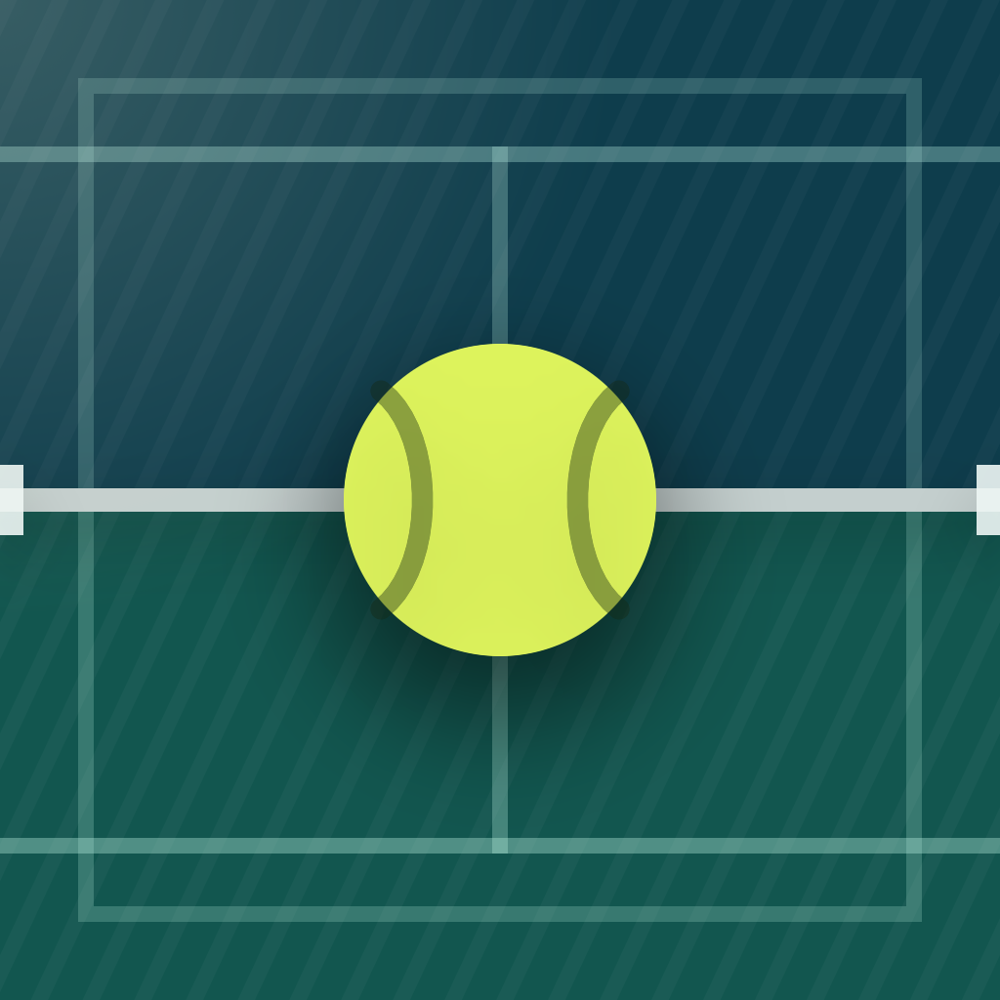

Current
Two candidates for the app icon, and the icon that ships today beside them.
This is a study, not a board: it keeps the loser, because a
decision with its rejected option thrown away is an assertion — see
docs/design/README.md.
The current icon is not a third candidate. It draws two
court halves in two colors, the painted lines, and the net — all three of
which court-surface 01 removed from the app. It is here as the
thing being replaced and as the scale reference, not as an option.
It is kept beside this page as icon-superseded.png rather than
linked into the asset catalog, because the export in this same change
overwrote the catalog's copy: a study that points at a live file stops
showing what it was drawn to compare against the moment the file wins.
A — the ball on the court — ships. Picked by the owner at the 29pt row.
Why B lost, and it was not for being the worse picture. At
1024 and at 180 B is the better drawing and the only one of the two that
says padel: the glass back wall is the one thing in the sport no
other racket sport has, and nothing else in this app draws it. It lost on
the row the study was built to settle. At 29 points the lines, the net, the
six posts and both panes are gone, and what is left is a dark lozenge — and
because its ground is night, the tile's own edge disappears
into a dark Settings list, so it does not even read as an icon. It was
enlarged to 1.2 of its projected size to give it the fairest shot at that
row, and it still failed there.
B's second cost was going to be paid forever: a perspective court is a
second drawing of a thing PadelDesign already owns, and no test
keeps it honest. That argued against it but did not decide it — a picture
good enough at 29pt would have been worth the maintenance.
1024 is the export. 180 is the home screen at 3x, 80 is Spotlight, and 29 is a Settings row. The 29pt row is where the decision is made — everything above it is flattery.

The app's own material and nothing else: court full bleed with
the weave, the Ball primitive at 46% with its two seam arcs, one
floodlight from the top-trailing corner. No net, no lines. Every value in it
is a token, and the ball is the same path Ball.swift strokes, so
the icon cannot drift from the app without someone editing both.
It reads at any size, because it is one round bright shape on one flat dark field. What it does not say is padel. A yellow ball on a blue court is every racket sport, and the App Store is where that distinction is worth something.
The whole court in three-quarter perspective, seen from above one corner: the near glass catching the floodlight, the frame's posts, the net, and the white lines a real court has. No ball — the glass is what makes it padel, and a ball on top of it is a second subject competing for the same 29 points.
The glass back wall is the one thing in the sport that no other racket sport has, and nothing else in this app draws it. That is B's whole case.
Its cost is real and is why this is a study and not a preference:
B is a second source of truth. The court exists in
PadelDesign as a top-down primitive; a perspective court is a
second drawing of the same thing, and no code keeps it honest. The day the
court's blue is re-tuned or a theme lands, the icon is a hand-edited file
that nobody's test will catch.
B also spends detail the small sizes cannot hold: four white lines, three posts, a net and two panes of glass, all of which must survive being 29 points across. Whether it does is exactly what the top row is for.
Dark is byte-identical to the default, and that is the design.
The app pins .dark and has no light variant (ADR-0006), so there
is no second appearance for a second icon to answer. A different dark icon
would be answering a question the app does not ask.
Tinted is drawn, not desaturated. iOS grayscales this slot and re-tints it by luminance, so the artwork has to carry its own value separation. A straight desaturation of the default already separates — the ball reads 0.892 against a 0.238 ground — but that ground is light enough to take the tint across the whole tile. The shipped tinted file drops the ground to 0.150 and lifts the ball to 0.941, a separation of 0.791 against the default's 0.654, so the tint lands on the ball, which is the figure at every other size too. Its maximum saturation is 0.000: it is already gray, and the system's own desaturation has nothing left to remove.
Those are Rec. 709 luma, read off the two exported PNGs — not off the source hexes, which omit the weave and the floodlight sitting on top of them. They are means over a region rather than single pixels, because the weave alone moves a point sample by about 0.03: the ball over its middle 164 units, the ground over a 260 × 284 box in the bottom-leading corner, clear of the felt and of the top-trailing floodlight.
Both candidates are vector and use the palette's own values —
#17406F court, #04181F night, #DDF35C
ball, #142812 at 0.4 for the seams, #FFF8D6 for the
light with the token's 0.14 → 0-by-0.62 falloff. A's ball is the 24-unit box
and the two curves from Ball.swift, scaled, not redrawn.
Two things are deliberately not faithful, and both are about size.
The weave runs on a 30-unit period rather than the app's 6pt one, because the
app's density moirés when an icon is resampled to 29 points. And B's court is
a drawing of a court, not Court — there is no primitive for a
perspective court, which is the cost named above.